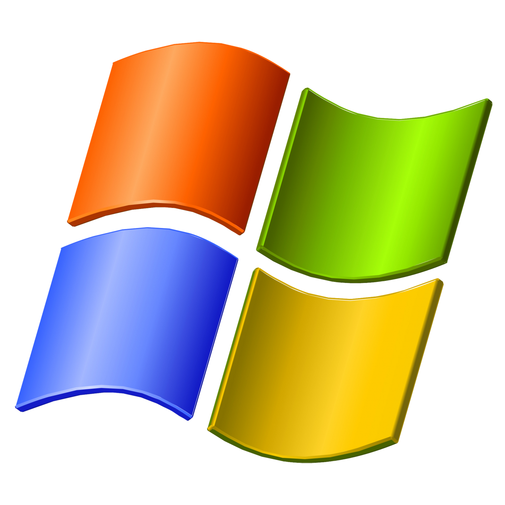

🖥️
My Computer
📁
My Documents
🌐
Internet Explorer
🗑️
Recycle Bin

start
🌐
🎵
🗂️
🔊
🖧
12:00 PM
👤
Avery Hadley
🌐
Internet Explorer
📧
Outlook Express
📁
My Documents
🖼️
My Pictures
🎵
My Music
🖥️
My Computer
⚙️
Control Panel
🖨️
Printers & Faxes
❓
Help and Support
🔍
Search
▶️
Run...